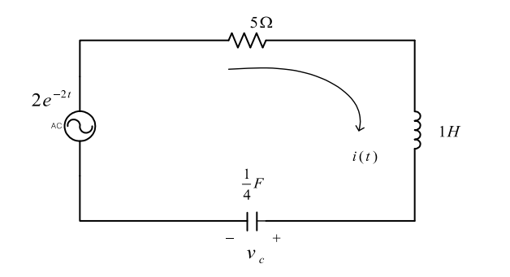

(b) LTI & Circuit analysis
- 회로 시스템에 적분변환 이론을 적용하여 해석한다.
- LTI 의미를 공고히 한다.
초기조건 : $i(0)=1 [\text{A}],v_c(0)=-6 [\text{V}]$ 일 때, 전류를 구하시오.
1. 미분 방정식을 사용한 풀이1
$$ -2e^{-2t}+5i+D(i-1)-6+v_c'=0,\quad i=\frac{1}{4}Dv_c'\to v_c'=4D^{-1}i $$$$ -2e^{-2t}+5i+Di-6+4D^{-1}i=0\to 4e^{-2t}+5Di+D^2i+4i=0 $$정리하면 다음과 같다.
$$ D^2i+5Di+4i=-4e^{-2t} $$일반해와 특수해를 구한다.
$$ i_h=c_1e^{-t}+c_2e^{-4t} $$$$ i_p=\left.\frac{-4}{(D+1)(D+4)}\right|_{D=-2}e^{-2t}=2e^{-2t} $$초기조건을 사용하여 계수를 구하면,
$$ i(0) =1 =c_1+c_2+2 $$$$ Di(0) =3 =-c_1-4c_2-4 $$$$ c_1=1, c_2=-2 $$따라서,
$$ i=e^{-t}+2e^{-2t}-2e^{-4t} $$2. 라플라스 변환을 사용한 풀이
위 회로 시스템은, causality 하다. 따라서, 단방향 라플라스 변환을 수행한다.
$$ -\frac{2}{s+2}+5I+s\left(I-\frac{1}{s}\right)-\frac{6}{s}+\frac{4}{s}I=0 $$$$ \left(5+\frac{4}{s}+s\right)I =\frac{2}{s+2}+1+\frac{6}{s} $$$$ I =\frac{1}{s+1}+\frac{2}{s+2}-\frac{2}{s+4} $$$$ i =\langle t|I\rangle =e^{-t}+2e^{-2t}-2e^{-4t} $$3. 임펄스 응답을 사용한 풀이 (잘못된 풀이)
입력에 임펄스를 넣어, 시스템의 임펄스 응답을 구한다.
$$ \delta(t)+5i+D(i-1)-6+v_c'=0,\quad i=\frac{1}{4}Dv_c'\to v_c'=4D^{-1}i $$$$ \delta(t)+5i+Di-6+4D^{-1}i=0 $$단방향 라플라스 변환을 수행한다.
$$ 1+5I+sI-\frac{6}{s}+4sI=0 $$$$ H\left(s\right)=I\left(s\right)=\frac{6/s+2}{5+4/s+s}=\frac{2s+6}{\left(s+4\right)\left(s+1\right)}=\frac{2/3}{s+4}+\frac{4/3}{s+1} $$실제 입력을 라플라스 변환하고, 시스템 함수와 곱하여, 입력에 대한 출력을 구한다.
$$ I_{in}=\langle s|2e^{-2t}u(t)\rangle =2\langle s+2|u\rangle =\frac{2}{s+2} $$$$ I =I_{in}H =\frac{2}{s+2}\left(\frac{2/3}{s+4}+\frac{4/3}{s+1}\right) =-\frac{8/3}{s+1}+\frac{2}{s+2}+\frac{2/3}{s+4} $$역 라플라스 변환을 수행한다.
$$ i =\langle t|I\rangle =-\frac83e^{-t}+2e^{-2t}+\frac23e^{-4t} $$이 결과는 위에서 풀이한 결과와 다름을 확인할 수 있다. 앞선 챕터의 내용들을 상기해보자.
-
임펄스 응답을 사용하여 시스템의 출력을 구하려면, 시스템이 LTI 여야 한다는 전제조건이 있어야 한다. 그러나, 위 회로는 초기값이 존재함으로, LTI 시스템이 아니다.
-
라플라스 변환을 사용한 옳은 풀이를 보면, 시스템의 출력을 구하였다. 라플라스 변환은 선형시스템에만 적용할 수 있다는 잘못된 일부의 언급을 반박하는 내용이다. 라플라스 변환은 선형이건 비선형이건 수행할 수 있다.
-
라플라스 변환을 사용한다는 것은, 컨볼루션 또한 가능하다는 것을 의미한다. 이것은 위와 마찬가지로, 컨볼루션이 선형시스템만 적용할 수 있다는 잘못된 일부의 언급을 반박하는 내용이다. 컨볼루션은 선형이건 비선형이건 수행할 수 있다.
4. 미분방정식 풀이2 (그린함수 사용)
이 풀이 역시 임펄스 입력에 대한 해석을 다룬다. 하지만, 위의 잘못된 풀이와는 다르게 올바른 해를 도출한다. 어떠한 차이가 있는지 풀이를 보며 생각해보자.
위 회로에 대한 미분방정식은 다음과 같다.
$$ D^2i+5Di+4i=-4e^{-2t} $$$$ i(0)=1, Di(0)=3 $$그린함수를 구한다.
$$ G(t,t')=G(t)=\begin{cases} c_{1}e^{-t}+c_2e^{-4t} & t > t'\\ c_{3}e^{-t}+c_4e^{-4t} & 0\le t < t' \end{cases} $$(1) t=0 에서
핵심 → $G(0)=0$, $DG(0)=0$ 로 설정하면, $c_3=c_4=0$ 이다.
(2) t=t’ 에서
$$ DG(t')=u(t')\to DG(t')=-c_1e^{-t'}-4c_2e^{-4t'}=1 $$$$ G(t'+)=G(t'-)\to c_{1}e^{-t'}+c_2e^{-4t'}=0 $$$$ c_1=\frac{1}{3}e^{t'},\quad c_2=-\frac{1}{3}e^{4t'} $$따라서,
$$ G(t,t')=\begin{cases} \frac{1}{3}e^{t'-t}-\frac{1}{3}e^{4(t'-t)} & t > t'\\ 0 & 0\le t < t' \end{cases} $$특수해를 구한다.
$$ i_p =\int_{0}^{t} dt' \left[G(t,t')f(t')\right] =-\frac{4}{3}\int_{0}^{t} dt' \left[e^{-t'-t}-e^{2t'-4t}\right] $$$$ =-\frac{4}{3}\left\{e^{-t}\int_{0}^{t} dt' \left[e^{t'}\right]-e^{-4t}\int_{0}^{t} dt' \left[e^{2t'}\right]\right\} $$$$ =-\frac{4}{3}\left\{e^{-t}\left[e^{t'}\right]^{t}_{0}-\frac{e^{-4t}}{2}\left[e^{2t'}\right]^{t}_{0}\right\} $$$$ =2e^{-2t}-\frac43e^{-t}-\frac23e^{-4t} $$일반해를 구한다.
$$ i_h=c_1e^{-t}+c_2e^{-4t} $$특수해의 초기조건은 모두 0이므로, 일반해에 초기조건을 적용하여, 계수를 구하면 된다.
$$ i_h(0)=1=C_1+C_2 $$$$ Di_h(0)=3=-C_1-4C_2 $$$$ C_1=\frac73,\quad C_2=-\frac43 $$따라서, 최종해는 다음과 같이 쓸 수 있다.
$$ i=i_h+i_p=e^{-t}+2e^{-2t}-2e^{-4t} $$5. Practice
연구실 구성원들에게만 제공되는 자료입니다. 연습문제